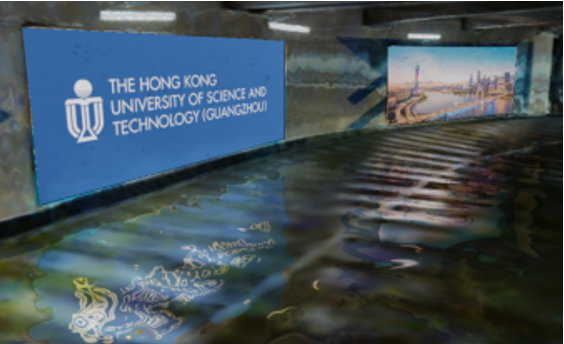

|
Zirui Wu Zirui Wu received his B.Sc. degree in Computer Science and Technology from Beijing Institute of Technology, China. He is currently pursuing his Ph.D. degree in robotics and autonomous systems (ROAS) at the Hong Kong University of Science and Technology (Guangzhou), co-supervised by Prof. Martin R. Oswald (the University of Amsterdam) and Prof. Jie Song. During 2024-2025, he was a reserach intern at NIO, worked with Kang Xu on specular neural inverse rendering in driving scenarios. Email / CV / Google Scholar / Github |

|
ResearchI'm interested in 3D perception for robotic applications. Representative papers are highlighted. |
|
|
From Rays to Projections: Better Inputs for Feed-Forward View Synthesis
Zirui Wu, Zeren Jiang, Martin R. Oswald, and Jie Song. Comming soon. Project Page / GitHub We propose using point cloud projections instead of Plücker coordinates as inputs for feed-forward view synthesis. This enables consistent rendering and MAE-style self-supervised learning. |
|
DualMap: Online Open-Vocabulary Semantic Mapping for Natural Language Navigation in Dynamic Changing Scenes
Jiajun Jiang, Yiming Zhu, Zirui Wu, and Jie Song RAL, 2025; IROS 2025 OWN Workshop (Best Demo!) Project Page / arXiv / GitHub We present DualMap, a novel online open-vocabulary mapping system that enables robots to understand and navigate dynamically changing environments through natural language queries. |
|

|
3D Gaussian Inverse Rendering with Approximated Global Illumination
Zirui Wu, Jianteng Chen, Laijian Li, Shaoteng Wu, Zhikai Zhu, Kang Xu, Martin R. Oswald, and Jie Song. arxiv, 2025 Project Page / arXiv / GitHub We propose a real-time approximated global illumination method for 3D Gaussian inverse rendering. The key idea is to leverage indirect emissors in the screen space to approximate the global illumination effect. |
|
|
MARS: An Instance-aware, Modular and Realistic Simulator for Autonomous Driving
Zirui Wu, Tianyu Liu, Liyi Luo, Zhide Zhong, Jianteng Chen, Hongmin Xiao, Chao Hou, Haozhe Lou, Yuantao Chen, Runyi Yang, Yuxin Huang, Xiaoyu Ye, Zike Yan, Yongliang Shi, Yiyi Liao, and Hao Zhao CICAI, 2023 (Best Paper Runner-up Award) Project Page / arXiv / GitHub We propose an autonomous driving simulator based upon neural radiance fields (NeRFs). Compared with existing works, ours has three notable features: (1) Instance-aware. (2) Modular. (3) Realistic. Our simulator achieves state-of-the-art photorealism results given the best module selection. Our simulator will be open-sourced while most of our counterparts are not. |
|
|
LATITUDE: Robotic Global Localization with Truncated Dynamic Low-pass Filter in City-scale NeRF
Zhenxin Zhu, Yuantao Chen, Zirui Wu, Chao Hou, Yongliang Shi, Chuxuan Li, Pengfei Li, Hao Zhao, and Guyue Zhou. ICRA, 2023 arXiv / GitHub We propose a two-stage pipeline for global localization in a city-scale neural map. |
Research Duties |
| 2025 | Reviewer for 3DV 2026, ICCV 2025, IROS 2025, RAL, Pattern Recognition, RAM |
| Fall 2025 |
Calculus I, Teaching Assistant |
| Fall 2024 |
Learning for 3D Vision, Head Teaching Assistant Lecturer: Jie Song |
Miscellaneaous |

|
I was the team captain of the Kunpeng Baseball Team at Beijing Institute of Technology (BIT) during 2021-2022.
Position: Catcher. Number: 28 (same with Buster Posey, the former catcher at the San Francisco Giants). |

|
I managed a Coffee shop (supply free coffee on campus, although our activities mainly involved with alcohols :>) during 2020-2022.
Coffee Machine: RANCILIO Class 5 (same as the MacDonald ones). Representative Drink: A herbal-tea coffee latte, with flavored cream topping. |
|
Web page borrowed from Jonathan T. Barron. Last update: . |